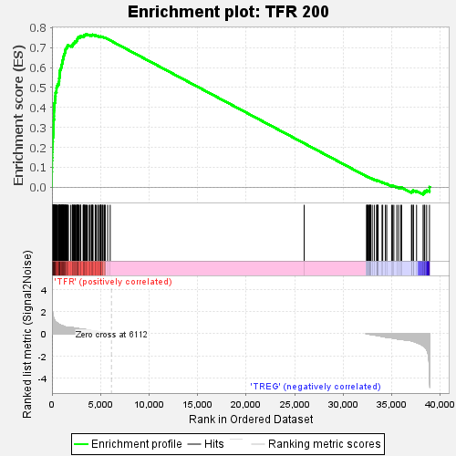
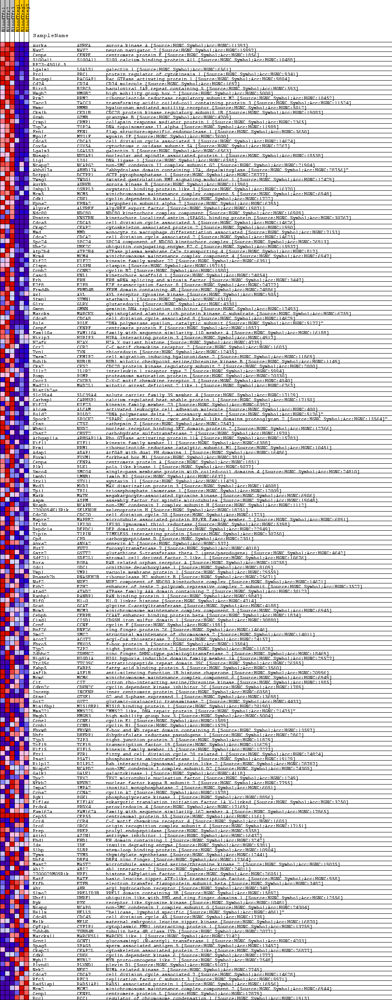
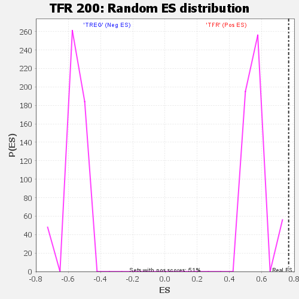

| | | Dataset | BL_TFRvsTREG_TFRvsTREG.tfr_vs_treg_cls.cls#TFR_versus_TREG |
| Phenotype | tfr_vs_treg_cls.cls#TFR_versus_TREG |
| Upregulated in class | TFR |
| GeneSet | TFR 200 |
| Enrichment Score (ES) | 0.76583654 |
| Normalized Enrichment Score (NES) | 1.3661683 |
| Nominal p-value | 0.0 |
| FDR q-value | 0.08628655 |
| FWER p-Value | 0.056 |
Table: GSEA Results Summary

Fig 1: Enrichment plot: TFR 200
Profile of the Running ES Score & Positions of GeneSet Members on the Rank Ordered List
| SYMBOL | TITLE | RANK IN GENE LIST | RANK METRIC SCORE | RUNNING ES | CORE ENRICHMENT | | 1 | Aurka | na | 1 | 4.451 | 0.0288 | Yes |
| 2 | Nav2 | na | 2 | 3.833 | 0.0536 | Yes |
| 3 | Cenpe | na | 3 | 3.592 | 0.0769 | Yes |
| 4 | S100a11 | na | 8 | 3.184 | 0.0974 | Yes |
| 5 | RP23-45G16.5 | na | 14 | 2.743 | 0.1150 | Yes |
| 6 | Lgals1 | na | 15 | 2.715 | 0.1326 | Yes |
| 7 | Prc1 | na | 21 | 2.454 | 0.1484 | Yes |
| 8 | Racgap1 | na | 36 | 2.085 | 0.1615 | Yes |
| 9 | Cd74 | na | 37 | 2.071 | 0.1749 | Yes |
| 10 | Birc5 | na | 42 | 2.022 | 0.1879 | Yes |
| 11 | Hmgb2 | na | 48 | 2.008 | 0.2008 | Yes |
| 12 | Rrm2 | na | 56 | 1.965 | 0.2133 | Yes |
| 13 | Tacc3 | na | 60 | 1.923 | 0.2257 | Yes |
| 14 | Hmmr | na | 89 | 1.713 | 0.2360 | Yes |
| 15 | Cks1b | na | 92 | 1.693 | 0.2470 | Yes |
| 16 | Gzmb | na | 110 | 1.594 | 0.2568 | Yes |
| 17 | Crmp1 | na | 120 | 1.539 | 0.2666 | Yes |
| 18 | Top2a | na | 133 | 1.516 | 0.2761 | Yes |
| 19 | Fen1 | na | 143 | 1.488 | 0.2855 | Yes |
| 20 | Myo1f | na | 148 | 1.478 | 0.2949 | Yes |
| 21 | Cdca3 | na | 162 | 1.436 | 0.3039 | Yes |
| 22 | Cox5a | na | 167 | 1.422 | 0.3130 | Yes |
| 23 | Lgals3 | na | 172 | 1.412 | 0.3220 | Yes |
| 24 | Nusap1 | na | 174 | 1.407 | 0.3311 | Yes |
| 25 | Lig1 | na | 184 | 1.381 | 0.3398 | Yes |
| 26 | Ncapg2 | na | 209 | 1.314 | 0.3477 | Yes |
| 27 | Abhd17a | na | 210 | 1.309 | 0.3562 | Yes |
| 28 | Dctpp1 | na | 213 | 1.305 | 0.3646 | Yes |
| 29 | Twsg1 | na | 214 | 1.304 | 0.3730 | Yes |
| 30 | Aurkb | na | 216 | 1.302 | 0.3814 | Yes |
| 31 | Osbpl3 | na | 221 | 1.297 | 0.3897 | Yes |
| 32 | Mcm5 | na | 226 | 1.289 | 0.3980 | Yes |
| 33 | Cdk1 | na | 235 | 1.263 | 0.4060 | Yes |
| 34 | Kpna2 | na | 240 | 1.253 | 0.4140 | Yes |
| 35 | Alyref | na | 247 | 1.248 | 0.4219 | Yes |
| 36 | Ndc80 | na | 309 | 1.141 | 0.4277 | Yes |
| 37 | Knstrn | na | 311 | 1.138 | 0.4351 | Yes |
| 38 | Cdca5 | na | 320 | 1.126 | 0.4421 | Yes |
| 39 | Ckap2 | na | 328 | 1.115 | 0.4492 | Yes |
| 40 | Mmd | na | 334 | 1.110 | 0.4562 | Yes |
| 41 | Cdca2 | na | 366 | 1.084 | 0.4625 | Yes |
| 42 | Spc24 | na | 368 | 1.082 | 0.4694 | Yes |
| 43 | Ube2c | na | 376 | 1.072 | 0.4762 | Yes |
| 44 | Atp2b4 | na | 463 | 1.007 | 0.4805 | Yes |
| 45 | Mcm4 | na | 464 | 1.006 | 0.4870 | Yes |
| 46 | Kif22 | na | 468 | 1.002 | 0.4934 | Yes |
| 47 | Clspn | na | 471 | 1.001 | 0.4998 | Yes |
| 48 | Ccnb2 | na | 489 | 0.989 | 0.5058 | Yes |
| 49 | Casc5 | na | 573 | 0.929 | 0.5097 | Yes |
| 50 | Erh | na | 585 | 0.918 | 0.5153 | Yes |
| 51 | E2f8 | na | 696 | 0.851 | 0.5180 | Yes |
| 52 | Frmd4b | na | 726 | 0.835 | 0.5227 | Yes |
| 53 | Axl | na | 729 | 0.834 | 0.5280 | Yes |
| 54 | Stmn1 | na | 740 | 0.831 | 0.5331 | Yes |
| 55 | Glrx | na | 746 | 0.829 | 0.5384 | Yes |
| 56 | Gmnn | na | 748 | 0.827 | 0.5437 | Yes |
| 57 | Marcks | na | 756 | 0.824 | 0.5489 | Yes |
| 58 | Cdca8 | na | 783 | 0.812 | 0.5534 | Yes |
| 59 | Pole | na | 790 | 0.808 | 0.5585 | Yes |
| 60 | Cenpf | na | 796 | 0.805 | 0.5636 | Yes |
| 61 | Fam110a | na | 810 | 0.801 | 0.5685 | Yes |
| 62 | Hirip3 | na | 813 | 0.798 | 0.5736 | Yes |
| 63 | H2afx | na | 827 | 0.791 | 0.5784 | Yes |
| 64 | Ccr2 | na | 828 | 0.791 | 0.5835 | Yes |
| 65 | Txn1 | na | 842 | 0.787 | 0.5882 | Yes |
| 66 | Tmem2 | na | 906 | 0.758 | 0.5915 | Yes |
| 67 | Bub1b | na | 932 | 0.750 | 0.5957 | Yes |
| 68 | Cks2 | na | 937 | 0.749 | 0.6005 | Yes |
| 69 | Il1r2 | na | 979 | 0.732 | 0.6042 | Yes |
| 70 | Pomp | na | 981 | 0.732 | 0.6089 | Yes |
| 71 | Cxcr3 | na | 990 | 0.730 | 0.6134 | Yes |
| 72 | Mad2l1 | na | 1024 | 0.721 | 0.6172 | Yes |
| 73 | Hist1h2ae | na | 1050 | 0.711 | 0.6212 | Yes |
| 74 | Slc39a4 | na | 1073 | 0.703 | 0.6252 | Yes |
| 75 | Carhsp1 | na | 1077 | 0.702 | 0.6296 | Yes |
| 76 | Kif23 | na | 1097 | 0.697 | 0.6336 | Yes |
| 77 | Alcam | na | 1101 | 0.697 | 0.6381 | Yes |
| 78 | Pold2 | na | 1142 | 0.685 | 0.6415 | Yes |
| 79 | Spock2 | na | 1155 | 0.680 | 0.6456 | Yes |
| 80 | Ctsz | na | 1164 | 0.677 | 0.6497 | Yes |
| 81 | Whsc1 | na | 1177 | 0.672 | 0.6538 | Yes |
| 82 | Chst2 | na | 1197 | 0.665 | 0.6576 | Yes |
| 83 | Arhgap11a | na | 1233 | 0.653 | 0.6609 | Yes |
| 84 | Kif11 | na | 1245 | 0.650 | 0.6649 | Yes |
| 85 | Rrm1 | na | 1294 | 0.634 | 0.6677 | Yes |
| 86 | Adap1 | na | 1304 | 0.631 | 0.6716 | Yes |
| 87 | Foxm1 | na | 1339 | 0.621 | 0.6747 | Yes |
| 88 | Cenpa | na | 1355 | 0.616 | 0.6783 | Yes |
| 89 | Plk1 | na | 1381 | 0.607 | 0.6816 | Yes |
| 90 | Smco4 | na | 1389 | 0.606 | 0.6853 | Yes |
| 91 | Lmnb1 | na | 1395 | 0.604 | 0.6891 | Yes |
| 92 | Stx11 | na | 1405 | 0.602 | 0.6928 | Yes |
| 93 | Mxd3 | na | 1453 | 0.590 | 0.6954 | Yes |
| 94 | Tpi1 | na | 1517 | 0.579 | 0.6975 | Yes |
| 95 | Matk | na | 1535 | 0.575 | 0.7008 | Yes |
| 96 | Aspm | na | 1571 | 0.573 | 0.7036 | Yes |
| 97 | Ncaph | na | 1583 | 0.573 | 0.7070 | Yes |
| 98 | 2700094K13Rik | na | 1612 | 0.572 | 0.7100 | Yes |
| 99 | Cdc20 | na | 1694 | 0.569 | 0.7116 | Yes |
| 100 | Mapre2 | na | 1935 | 0.557 | 0.7090 | Yes |
| 101 | Ifi30 | na | 2099 | 0.540 | 0.7083 | Yes |
| 102 | Depdc1a | na | 2103 | 0.540 | 0.7117 | Yes |
| 103 | Tipin | na | 2109 | 0.538 | 0.7151 | Yes |
| 104 | Cpd | na | 2180 | 0.531 | 0.7167 | Yes |
| 105 | Anxa2 | na | 2195 | 0.528 | 0.7198 | Yes |
| 106 | Fut7 | na | 2269 | 0.520 | 0.7213 | Yes |
| 107 | Gstt2 | na | 2292 | 0.517 | 0.7240 | Yes |
| 108 | Sdf2l1 | na | 2353 | 0.508 | 0.7258 | Yes |
| 109 | Rora | na | 2356 | 0.508 | 0.7290 | Yes |
| 110 | Odc1 | na | 2397 | 0.501 | 0.7312 | Yes |
| 111 | Vmp1 | na | 2513 | 0.482 | 0.7314 | Yes |
| 112 | Rnaseh2b | na | 2542 | 0.479 | 0.7338 | Yes |
| 113 | Nuf2 | na | 2578 | 0.476 | 0.7359 | Yes |
| 114 | Ezh2 | na | 2579 | 0.476 | 0.7390 | Yes |
| 115 | Atad2 | na | 2605 | 0.473 | 0.7414 | Yes |
| 116 | Ranbp1 | na | 2614 | 0.472 | 0.7443 | Yes |
| 117 | H1f0 | na | 2642 | 0.467 | 0.7466 | Yes |
| 118 | Gcat | na | 2685 | 0.459 | 0.7485 | Yes |
| 119 | Mcm3 | na | 2717 | 0.454 | 0.7506 | Yes |
| 120 | Cebpb | na | 2789 | 0.442 | 0.7517 | Yes |
| 121 | Cisd1 | na | 2793 | 0.442 | 0.7544 | Yes |
| 122 | Ccnf | na | 2925 | 0.428 | 0.7538 | Yes |
| 123 | Rnf26 | na | 2951 | 0.422 | 0.7559 | Yes |
| 124 | Smc2 | na | 2964 | 0.421 | 0.7583 | Yes |
| 125 | Acot7 | na | 3204 | 0.399 | 0.7547 | Yes |
| 126 | Fbxo5 | na | 3253 | 0.390 | 0.7560 | Yes |
| 127 | Tjp2 | na | 3257 | 0.389 | 0.7585 | Yes |
| 128 | Zdhhc2 | na | 3314 | 0.381 | 0.7595 | Yes |
| 129 | Higd1a | na | 3315 | 0.381 | 0.7620 | Yes |
| 130 | Ttc39c | na | 3369 | 0.374 | 0.7630 | Yes |
| 131 | Fabp5 | na | 3447 | 0.363 | 0.7634 | Yes |
| 132 | Asf1b | na | 3485 | 0.357 | 0.7647 | Yes |
| 133 | Mcm6 | na | 3532 | 0.349 | 0.7658 | Yes |
| 134 | Cit | na | 3616 | 0.337 | 0.7658 | Yes |
| 135 | Cdkn2c | na | 3774 | 0.314 | 0.7638 | No |
| 136 | Incenp | na | 3922 | 0.291 | 0.7619 | No |
| 137 | Gtse1 | na | 3928 | 0.291 | 0.7637 | No |
| 138 | Got2 | na | 4086 | 0.269 | 0.7613 | No |
| 139 | Mis18bp1 | na | 4102 | 0.267 | 0.7627 | No |
| 140 | Mms22l | na | 4166 | 0.259 | 0.7627 | No |
| 141 | Hmgb3 | na | 4182 | 0.258 | 0.7640 | No |
| 142 | Ccne1 | na | 4229 | 0.251 | 0.7645 | No |
| 143 | Ccnb1 | na | 4451 | 0.221 | 0.7602 | No |
| 144 | Fbxw8 | na | 4469 | 0.218 | 0.7611 | No |
| 145 | Dhfr | na | 4561 | 0.206 | 0.7601 | No |
| 146 | Tjp3 | na | 4726 | 0.182 | 0.7571 | No |
| 147 | Tcf19 | na | 4753 | 0.180 | 0.7576 | No |
| 148 | Kif15 | na | 4892 | 0.162 | 0.7551 | No |
| 149 | Fzr1 | na | 4976 | 0.151 | 0.7539 | No |
| 150 | Psat1 | na | 5005 | 0.147 | 0.7541 | No |
| 151 | Rilpl2 | na | 5014 | 0.146 | 0.7548 | No |
| 152 | Ncapd2 | na | 5037 | 0.141 | 0.7552 | No |
| 153 | Galk1 | na | 5054 | 0.140 | 0.7557 | No |
| 154 | Tpx2 | na | 5171 | 0.126 | 0.7535 | No |
| 155 | Nfkb2 | na | 5234 | 0.117 | 0.7527 | No |
| 156 | Impa2 | na | 5254 | 0.114 | 0.7529 | No |
| 157 | Ccna2 | na | 5397 | 0.095 | 0.7499 | No |
| 158 | Pgk1 | na | 5457 | 0.086 | 0.7489 | No |
| 159 | Eif1ax | na | 5471 | 0.084 | 0.7491 | No |
| 160 | Prdx4 | na | 5733 | 0.048 | 0.7427 | No |
| 161 | Fam162a | na | 5998 | 0.013 | 0.7359 | No |
| 162 | Cep55 | na | 25979 | 0.000 | 0.2200 | No |
| 163 | Ccr4 | na | 32404 | -0.008 | 0.0541 | No |
| 164 | Orc6 | na | 32452 | -0.015 | 0.0530 | No |
| 165 | Prep | na | 32453 | -0.015 | 0.0531 | No |
| 166 | Azin1 | na | 32558 | -0.029 | 0.0506 | No |
| 167 | Ehd1 | na | 32618 | -0.036 | 0.0493 | No |
| 168 | Ide | na | 32673 | -0.045 | 0.0482 | No |
| 169 | Slbp | na | 32738 | -0.054 | 0.0469 | No |
| 170 | Tyms | na | 32779 | -0.058 | 0.0462 | No |
| 171 | Dbf4 | na | 32809 | -0.062 | 0.0459 | No |
| 172 | Mast2 | na | 32827 | -0.065 | 0.0459 | No |
| 173 | Abi2 | na | 32988 | -0.087 | 0.0423 | No |
| 174 | 2700029M09Rik | na | 33201 | -0.114 | 0.0376 | No |
| 175 | Batf | na | 33448 | -0.152 | 0.0322 | No |
| 176 | Etfb | na | 33463 | -0.153 | 0.0328 | No |
| 177 | Ahr | na | 33523 | -0.162 | 0.0324 | No |
| 178 | Slmo2 | na | 33546 | -0.167 | 0.0329 | No |
| 179 | Uhrf1 | na | 33599 | -0.175 | 0.0327 | No |
| 180 | Ryk | na | 34000 | -0.238 | 0.0239 | No |
| 181 | Ncapg | na | 34069 | -0.249 | 0.0237 | No |
| 182 | Hells | na | 34346 | -0.302 | 0.0186 | No |
| 183 | Cdc45 | na | 34483 | -0.327 | 0.0172 | No |
| 184 | Melk | na | 34986 | -0.369 | 0.0066 | No |
| 185 | Cyfip1 | na | 35078 | -0.389 | 0.0068 | No |
| 186 | Tubb4b | na | 35217 | -0.419 | 0.0059 | No |
| 187 | Marcksl1 | na | 35525 | -0.458 | 0.0009 | No |
| 188 | Gcnt1 | na | 35718 | -0.492 | -0.0008 | No |
| 189 | Spag5 | na | 35941 | -0.521 | -0.0032 | No |
| 190 | Ckap2l | na | 36015 | -0.527 | -0.0017 | No |
| 191 | Cdk6 | na | 37030 | -0.637 | -0.0237 | No |
| 192 | Mybl2 | na | 37072 | -0.648 | -0.0206 | No |
| 193 | Plxnd1 | na | 37213 | -0.686 | -0.0198 | No |
| 194 | Nek2 | na | 37233 | -0.692 | -0.0158 | No |
| 195 | Cdca7 | na | 37557 | -0.788 | -0.0190 | No |
| 196 | Rfc3 | na | 38230 | -1.080 | -0.0294 | No |
| 197 | Rad51ap1 | na | 38346 | -1.133 | -0.0250 | No |
| 198 | Mcm2 | na | 38400 | -1.182 | -0.0187 | No |
| 199 | Cenpl | na | 38596 | -1.422 | -0.0146 | No |
| 200 | Rcc1 | na | 38886 | -3.541 | 0.0009 | No |
Table: GSEA details [plain text format]

Fig 2: TFR 200
Blue-Pink O' Gram in the Space of the Analyzed GeneSet

Fig 3: TFR 200: Random ES distribution
Gene set null distribution of ES for TFR 200